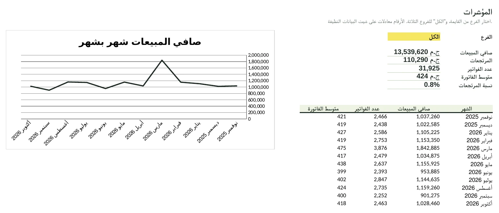

بنحمّل دفتر السنة…
صافي المبيعات شهر بشهر
المواسم متعلّمة بالأصفر
الأقسام
دوس على قسم يفلتر جدول الأصناف
نصيب كل قناة
أيام الأسبوع
متوسط البيع في اليوم الواحد
الأصناف
ملاحظات على السنة
محسوبة من الداتا كلها، مش من الفلتر
من التصدير الخام للجدول النظيف
صفوف حقيقية من الملف الخام
سجل التنضيف
كل تعديل متعدّ، مفيش صف بيختفي من غير سبب
الملف اللي العميل بيستلمه
نفس الأرقام اللي في الكشف، في ملف Excel بيفتح على أي جهاز: معادلات SUMIFS بتتحدث لما تختار الفرع، رسومات جاهزة، وجدول نظيف بفلاتر يتفتح كمان في Power BI.

| الشيت | فيه إيه |
|---|---|
| المؤشرات | صافي المبيعات والمرتجعات وعدد الفواتير ومتوسط الفاتورة، ورسم الشهور. كله معادلات على البيانات النظيفة، والفرع بيتختار من قايمة. |
| شهري × فرع | كل شهر لكل فرع، زي Pivot Table، ورسم خطوط للفروع التلاتة. |
| الأقسام والقنوات | كل قسم في كل قناة، ونصيب في الفرع وطلبات والتليفون شهر بشهر. |
| أعلى الأصناف | ترتيب الأصناف بالإيراد والكمية والنصيب. |
| ملاحظات | الملاحظات الست ومعاها المقترح، بالأرقام. |
| سجل التنضيف | كل مشكلة اتلقت في الداتا وعدد الصفوف ومثال قبل وبعد. |
| البيانات النظيفة | كل سطر فاتورة بعد التنضيف، جدول Excel بفلاتر، والمرتجعات بالسالب. |